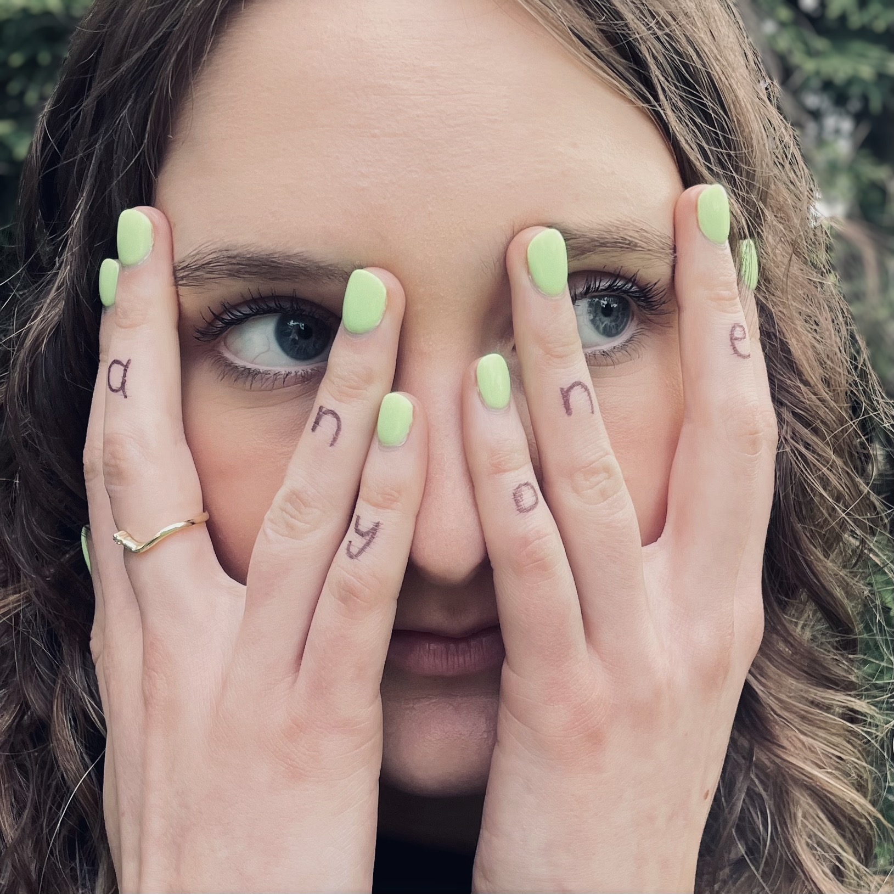
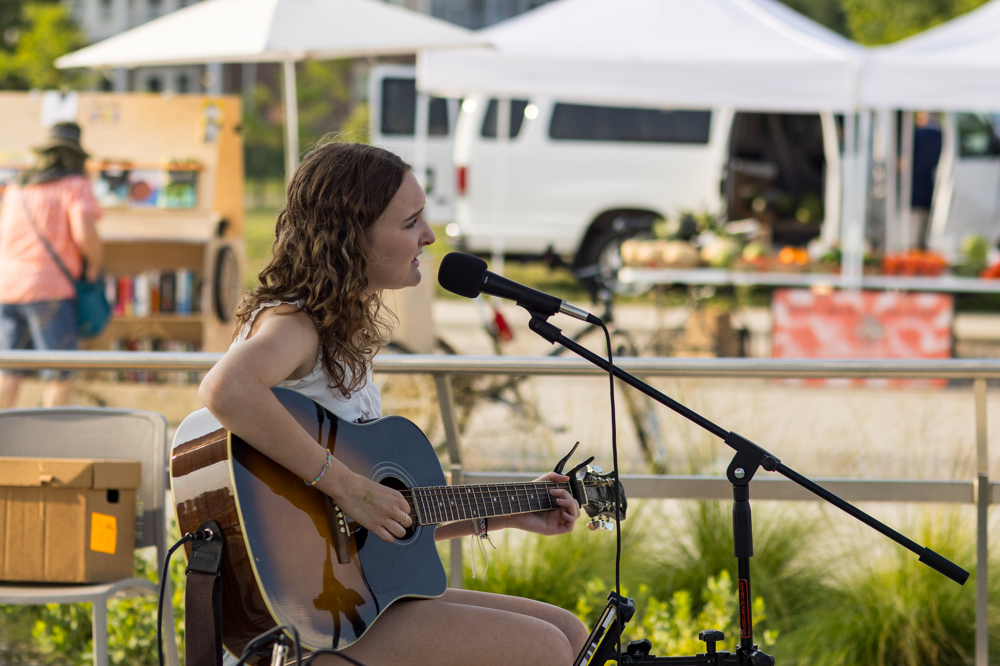
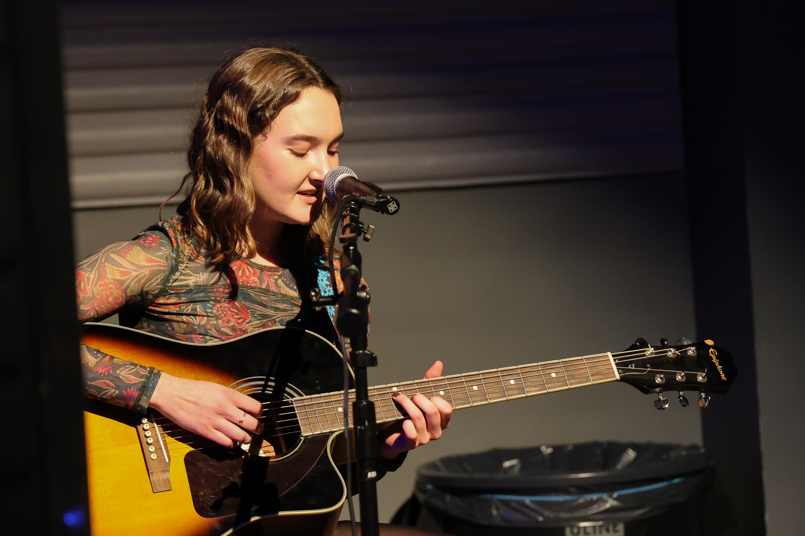
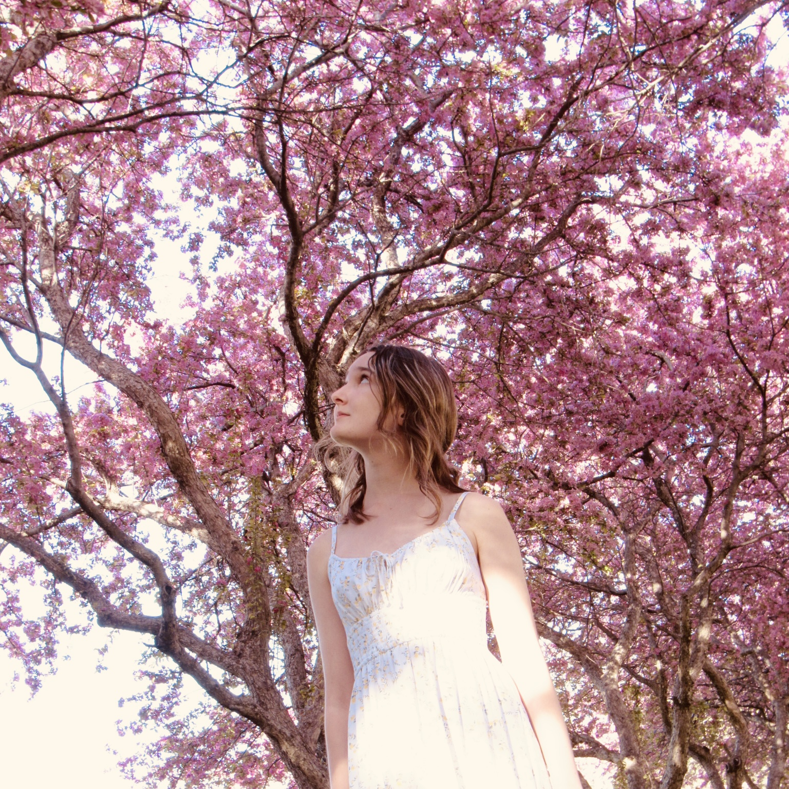

Singer · Songwriter · Storyteller
Maraya
Maraya
Nicole.
Honest songwriting. Meaningful stories. Music made to connect.
Explore My Music Get In Touch
Get to know the artist
A little about me.
Since the moment Maraya Nicole first picked up an acoustic guitar at 12 years old, there was no doubt in her mind that songwriting was her true passion. After writing her first song, the floodgates opened, and she began posting YouTube videos of each new song as they cascaded out of her at a dizzying rate.
At 14, she worked with a producer to create her first EP, and at 15, she began playing local gigs in her hometown of Des Moines, Iowa. Now, she’s enrolled in college studying Commercial Music, thrilled to be immersed ears-deep in her passion every day. While some may call her ambitious for chasing after her dreams, Maraya would say she’s just doing the thing that brings her the most joy: writing songs and sharing them.
To Maraya, songwriting is about connecting with people. There’s nothing like the feeling of a stranger approaching her at a gig to say they loved the message of one of her originals, or that they appreciate the style or thoughtfulness of her writing.
Maraya believes well-written songs tell stories and move people emotionally. She works every day to create songs that do just that.
Press & Media.
Explore my music, performances, and press materials.



Stay in touch.
For bookings, collaborations, press inquiries, or just to say hello.